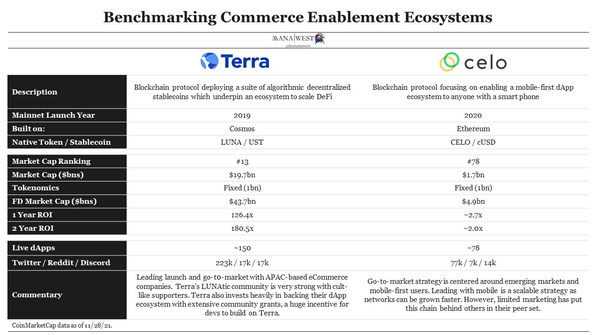
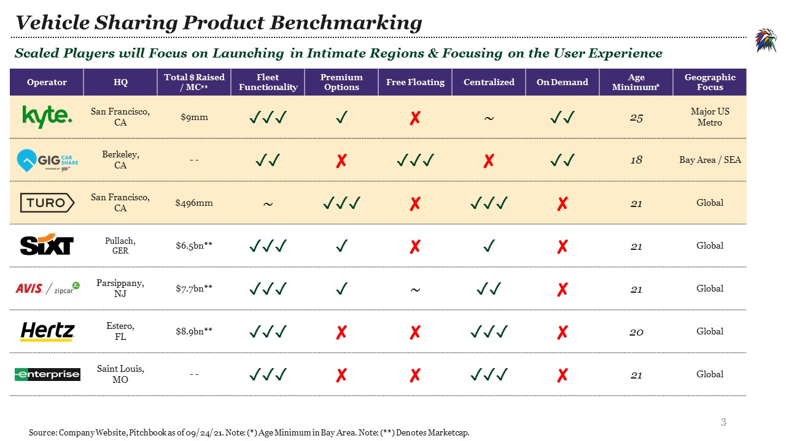
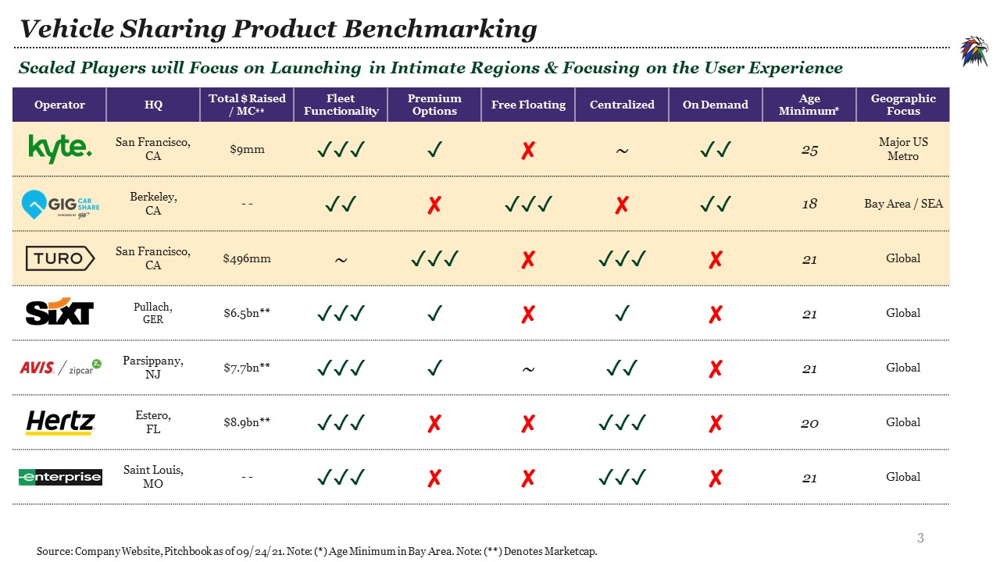
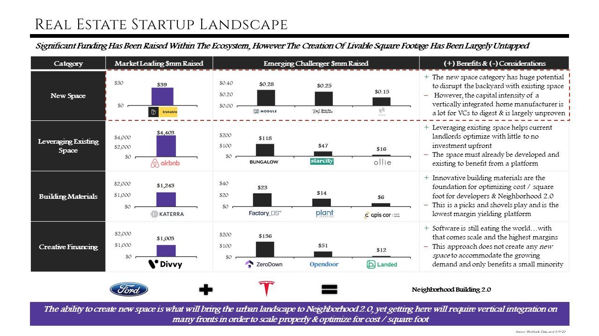
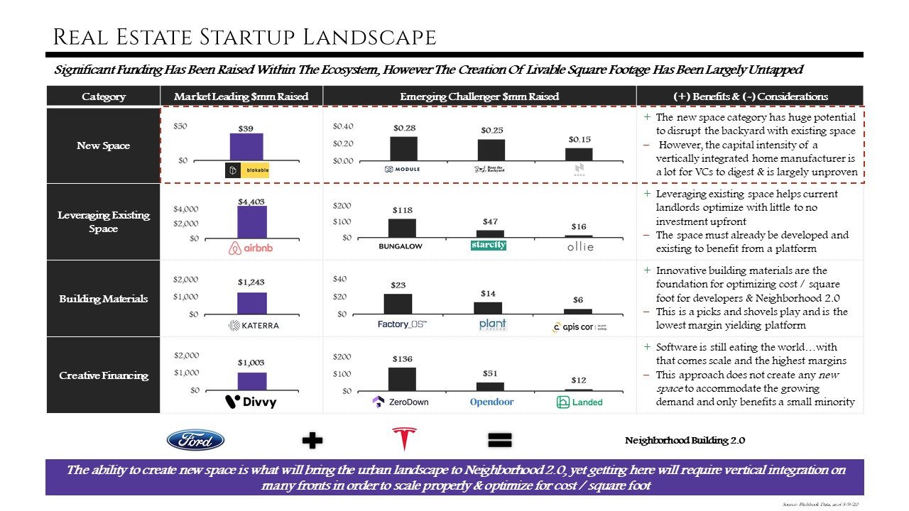

Print Friendly Version
Consumer purchasing habits shifted from exclusively brick & mortar pre-2000’s to nearly a quarter online in a matter of 20 years. The broader eCommerce industry is ~$4.8tn in 2021 and is projected to be well over $6tn by 2024 and shows no signs of stopping.
As crypto adoption accelerates, a natural progression of our online spending habits will shift towards purchasing goods online with stablecoins. The yields in DeFi and shift towards a digital first lifestyle, driven by the proliferation of the metaverse is making blockchain-enabled ecosystems near impossible to ignore.
DeFi adoption, like crypto more broadly, reflects other social and generational trends, including the rising digitization of our daily lives and shift towards decentralization. For example, surveys by the Federal Reserve show that cash use declined across all age groups during the pandemic, and that the 25-34 year-old age group used cash for only 10% of payments last year. This may be attributed to the growth of digital payment technologies like Venmo, ApplePay & Square. Stablecoins are a natural next step that will grow into a larger proportion of the digital payment ecosystem.
Bitcoin and Ethereum weren’t properly engineered to scale to be a medium of exchange, they’re volatile and expensive to use, making it tough for merchants to accept as payment. Because only a small amount of merchants accept crypto as a payment option, crypto-natives still have many hoops to go through in order to pay for things in the “real world” such as food, rent, bills, etc.
Even stablecoins held in a centralized wallet and converted by payment processors incur hefty fees and still “force” crypto-native personas to have to exit the cryptosphere and convert back to fiat. Self custodying your assets is also a huge positive externality that most normies don’t understand. When you self-custody your assets with a wallet like Metamask, you have near instant access to your funds. In a matter of minutes, you can “cash out” of your Bitcoin/Ethereum (insert token here) into a stablecoin of your choice. You’d then need to send your stables to a centralized wallet to “cash out” into fiat. This is a convoluted and expensive way to do what FTX & Coinbase are looking to fix with their debit card offerings.
FTX is helping remove these layers with their own debit card. The FTX US card allows you to spend your balances on FTX US automatically on purchases. It works with any tokens on FTX US, not just USD. Effectively letting people use Bitcoin to pay for goods in the real-world. When you purchase something with your FTX card, FTX US will deduct that amount of funds from your balance. If you do not have USD, FTX US will convert your other coins to fund the purchase, the same way it would if you had negative USD. Coinbase is also following suit.
For those non crypto-natives, stablecoins offer a near risk-free method of getting their feet wet into the crypto universe through a unique way to transact – minus the volatility of Bitcoin & Ethereum. The more people utilizing stablecoins, the larger the crypto ecosystem grows and the faster adoption happens while scaling the composability of this novel way to pay for goods online.
Just as crypto isn’t only Bitcoin, eCommerce is much more than just buying goods online on Amazon. Massive tailwinds such as social / mobile commerce, gamification & niche marketplaces have been driving the industry to new heights. Stablecoins are faster, cheaper and a much more reliable means to transact with rather than Bitcoin. As merchants who accept Bitcoin as a means of exchange are taking steps in the right direction, they are ultimately using an inefficient model. Here we explore the intersections between stablecoins & buying goods online.
Institutions and fintech along with eCommerce players are taking note, and like many are starting small with Bitcoin exposure and will gradually follow suit to onboard the Ethereum ecosystem which will eventually lead to stablecoins becoming as ubiquitous as traditional fiat check-out options in most online stores.
Cumulative Ethereum addresses follow that of S-curve trajectory boasting ~178mm cumulative users. Metamask, the leading Ethereum Wallet application founded in 2016, boasted 10mm monthly active users in August of 2021. A surprising uptick compared to Coinbase’s 7.4mm number reported on November 9th. MetaMask’s exponential growth has tracked closely with that of the Ethereum ecosystem. In 2019, $2bn in crypto assets were committed to DeFi. Today, Ethereum supports a flourishing ecosystem with over $80bn in assets under management. Becoming impossible to ignore.
The value in selecting a certain stablecoin resides in the dApp ecosystem enabled by the protocol, not necessarily just the stablecoin itself.
Stablecoins came about as a means to pay for goods in a US Dollar denominated manner, while never leaving the blockchain ecosystem – a compelling value proposition as the top 5 stablecoins account for ~$143bn in market cap. These coins are pegged 1:1 to their respective currency. The most popular stablecoin by market cap being USDT, the USD peg by Hong-Kong based Tether.
A simple concept to grasp initially, has potential to be the most scalable innovations the blockchain has enabled. Take for instance an immigrant worker who came from a country like Nicaragua – we can call her Maria. Like many in her shoes do, they’re often supporting their families back home by sending USD via Western Union (fee) back to Nicaragua to be then converted (fee) into Nicaragua’s native currency, Cordobas. If they’re lucky, her family back home is banked, so the physical cash is stored away upon receipt. If not, they’re at risk of loss, theft or destruction. With stablecoins, Maria can link her debit card in the US to a wallet like Metamask, buy ETH, swap ETH for a stable of her choice to then be sent back to her families Metamask wallet address who owns their private keys & are self custodying their assets. This use case alone unlocks a massive value-add for currency swaps & cross-border commerce enablement.
However, not all stablecoins are made alike. For example, in February 2019, JPMorgan became the first bank in the United States to create and test a digital coin that represents 1 USD. As the cryptocurrency industry grows, other banks, financial services companies, and even governments will create stable digital currencies (e.g., Central Bank Digital Currencies), as will large organizations outside of the finance sector. Facebook also announced its plans for Libra, “a stable digital cryptocurrency that will be fully backed by a reserve of real assets,” in June 2019. However, such proposals from JPM and Facebook forfeit the core value proposition of blockchain technology: global adoption of a common infrastructure without a central authority or administrator that may abuse its influence. This alone gives stablecoins built by crypto-native players an advantage over their centralized competitors.
The Web3 Shopping Model of the Future: Why Any of This Matters
Just as NFTs and DAOs reward their early adopters with what could be multi-million dollar airdrops, the Web3 shopping model of the future will follow suit. Shoppers will be directly rewarded for their brand loyalty for using the platform of their choice. Rewards could be seen through earning free shipping, discounts on purchases, lotteries, beta test access, exclusive brand specific NFTs, airdrops and much more.
For merchants, the first main benefit of using decentralized systems is immediately removing the traditional 1.5 to 3.5% credit card processing fee per transaction. Merchants keep 100% of the funds when accepting stablecoins directly. Doing this math at scale, it becomes a no-brainer for merchants to benefit their bottom line. On top of this, traditional fiat funds take 1-2+ days to officially settle into a merchant’s account. This creates delays and inefficiencies, compared to stablecoin payments, which are settled nearly instantly. As previously mentioned, merchants who accept Bitcoin as a means of pay are subject to high volatility & using Ethereum is extremely expensive to use.
For consumers, as it stands, crypto-natives are able to enjoy the benefits of stablecoins within the cryptosphere, but still have to go through the complex process of cashing out back to fiat to pay for “real world” purchases. Using DeFi as a means to transact unlocks a radically new way to spend save and earn which wouldn’t be possible without the blockchain. For instance, a user of the Terra Ecosystem could buy UST, deposit their savings balance into Anchor’s UST borrowing & lending pool and earn up to 19% APY on their savings…absolutely blowing anything from the traditional world out of the water.
Although difficult to completely imagine what web3-enabled commerce will look like, we can use the streaming wars & current eCommerce market structures as a proxy of what the future may look like as consumers are ultimately the net benefiters of the “CAC wars”.
Amazon created a race to the bottom with 2 day and in some instances, same day shipping. Domino’s led the pack with 30-minute deliveries. Netflix’s investments in original content like Squid Games, Black Mirror & Last Chance U force their competitors like Disney/Hulu, Amazon (who just purchased MGM for $9bn) and the like to double down on original content offering viewers the best bang for their buck, else they leave. Uber & Lyft’s race to the bottom forced Uber to diversify and out came a super-app where you can not only call a ride, but order food delivery, reserve a scooter and map out public transit options. Credit Cards also fight tooth and nail to win customers through a slew of cash back, points, airline miles, 0% APR for X months, reduced or even free partnership subscription services, you get the point.
The team behind The Basic Attention Token (BAT) is an example of how users of decentralized networks get rewarded for using their product suites. If you use the Brave Browser, you not only get a native ad-blocker, cookies blocked and enhanced malware protection, but you’re also rewarded for the ads you view via $BAT tokens added to your wallet, paid out monthly (see image below). This is flipping the traditional ad model on its head as user privacy is prioritized as opposed to exploited and ad-viewers are rewarded for units of their time. Based on the model of internet browsing with Brave, we can see how commerce and spending online could follow suit.
Discovery is arguably the hardest part of facilitating good eCommerce. Honey is a good example of this. Originally only a web browser extension, Honey tracks sales offerings and retailers’ promo codes, then automatically tries all the eligible promo coupons for a buyer during checkout & selects the one that provided the most savings and applies it on your behalf. This helps shoppers feel more comfortable with their purchases and reduces shopping cart abandonment. Data from 2019 shows its browser extension works across ~30,000 merchant websites, including fashion, technology, travel and even pizza delivery. Saving 17 million members more than $2bn to date. PayPal took notice of the work Honey was doing and acquired them for $4bn in a mostly cash deal. Again, showing how large the mega-cap strategic interest is for building out complete customer acquisition suites. When Web3 shopping models reach scale, players like PayPal, Visa, Mastercard and the like will be taking note and could pay high premiums for access to these new economies.
Lolli is a great example of a company who’s building the Web3 Shopping rails. Lolli, a New York-based company partners with top stores that pay them when you shop. Once you make a purchase, merchants pay Lolli who then pays you in Bitcoin or USD to your Lolli Wallet – which can then be transferred to an external Bitcoin address.
I did a double whammy and used Honey’s promo codes to get an additional 5% off plus ~8% back in BTC on my purchase from Everlane.

Although Megacaps have made investments & partnerships around building out their capabilities in the space, it’s yet to be seen how they will completely flush out their offerings & niche down on their core competencies.
Now that we’ve set the stage for what the Web3 shopping model may look like, let’s take a look at some of the players building in the space.
What was initially just the ability to swap crypto for fiat-denominated gift cards (Bitrefill) is growing into an ecosystem where builders can link their products to a native token and reward holders of the token for usage of their respective dApps.
Building tools on-chain rather than simply integrating cryptocurrencies put players like Chai, Kado and Valora ahead of their larger and more established competitors like Wyre, Bitpay & Tala.

The Gen Z Demographic Tailwind: Special thanks to the BowTied Community for the TikTok commentary.
Consumers more and more want to spend money with a brand that has a cohesive message for a given purpose, usually centered around a community. This is why many brands that have niched down are doing so well. They are connecting with an audience who genuinely wants to support them. We are seeing this live with the Shopify integration on TikTok. It could be that the audience of TikTok skews towards Gen Z, or that the format is completely different, but brands who just try to throw up traditional ads on other platforms generally are not performing well.
This is largely due to an algorithm that drives content to users based on unique interests – not just people or brands one follows (like on Instagram). Two things to look into if you are new to the platform: #TikTokMadeMeBuyIt, peer reviewed hashtag on the platform that has now passed 3 billion views, leading Amazon to create its own page to track them all and voice overs. The ability to create sounds/voice effects for free, and avoid potentially expensive music licensing in the process, is a great tool to have in your arsenal.
TikTok has also made a massive push into the crypto scene, announcing their own creator led NFT collection (LINK) and has partnered with crypto-native Audius for their new “TikTok Sounds” feature (LINK). A natural next step for TikTok could be to offer creators the ability to be paid out or tipped in BTC or a stablecoin of their choice. With social platforms like Rally, Roll and Deso now into the mix, consumers are becoming savvy to the idea of either tipping or owning their creator’s choice of tokens. It’s only a matter of time before TikTok takes note and flushes out their blockchain program accordingly. Combine the investments TikTok has made and the trends in social commerce & a future that allows Gen Z Consumers to pay with stables isn’t far from fruition.
Concluding Thoughts
The Web3 Shopping model of the future looks bright, either way you paint it – be it through the lens of Terra, Celo or USDC. Applications beyond traditional means of exchange are also super interesting to think about. Who’s building payment rails for the Metaverse? Imagine when you could pay for virtual goods and services on the same dApps that you buy cat food on from Amazon. What about virtual shopping malls? Terra and Celo are the largest platforms looking to build out the stack for blockchain-enabled commerce and it will be interesting to see how Celo is going to answer the $40bn in market cap whitespace between them and Terra. What’s even more exciting are that megacaps are also taking note that their consumers are demanding crypto payment, check out and custodial services. Envisioning a future that looks like a Brave Browser for commerce where merchants compete for your business through the incentives mentioned above (free shipping, bonus items, etc) is also a fun mental exercise. eCommerce is only one avenue that stablecoins can disrupt. What about ride-hailing services, food delivery, insert any saturated market and boom – there’s a world where decentralization can come into play just as Pancake Swap does with DEXs.
To conclude, stablecoins unbound the walled gardens of centralized economies as for most, they know no borders and can be easily transferable. Remember, they are 1:1 pegs to the USD which reduces the volatility that crypto is known for. Participants in emerging economies like Nicaragua & Zimbabwe now have a safe way to gain USD exposure like never before. Algorithmic stablecoin ecosystems like Terra & Celo give users exposure to network growth and the ability to participate on the upside. Lolli, Kado and Valora are building version one of what the Web3 Shopping Model of the future will look like – possibly built off best practices from The Brave Browser. Brands are taking note and doubling down on their niches to best serve the growing class of digitally native consumers. The future we’re building on-chain is bright, exciting and I encourage you all to take a look at some of the dApps I mentioned.


 



 
